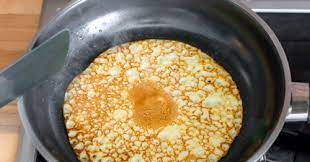

Finnish Pancake

Description
All over the world pancakes are loved in different shapes and forms. Pancakes can be made in an oven or fried on a pan. They can be thick or thin.
Finnish pancakes are of thin variety. The batter is very simple to make. The pancakes are fried with a pan on open fire or a normal stove.
Ingredients
Measurements for 8 big pancakes.
- 3 eggs
- 6 dl of 3,5% milk
- 3 dl wheat flour
- 1-2 tablespoons sugar
- 1 teaspoon salt
Steps
- Whisk the eggs until the texture is broken.
- Add approximately 2 dl of milk and all the other ingredients to the batter.
- Whisk until batter is smooth.
- Add the rest of the milk and mix.
- Let the batter swell for 30 min.
- Fry pancakes with butter (recommended) or oil.
Back to the main page.